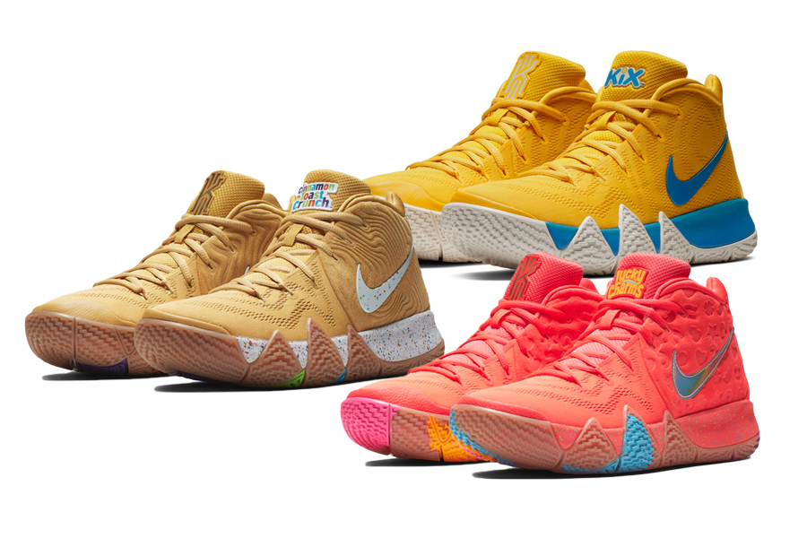

The 2019 Nike Chinese Collection
Two styles of graphics are
used to represent this throughout the collection: The first is a traditional geometric quilt pattern
that is influenced by all 12 Chinese Zodiac symbols; the second is a mosaic pattern of the
12 symbols.
learn more

Three examples:
- The patent leather on the heel of the 2009 Nike Air Max 1 “Year of the Ox” appears on the tongue of this
year’s version.
- The faux-snakeskin material on the 2013 Nike Air Force 1 “Year of the Snake” is applied to different
components of the new upper.
- Colors such as crimson, metallic gold and Amarillo yellow form the collection’s palette in a color
scheme inspired by the regalia of traditional Chinese Emperorship.

Nike Kyrie 4 Debuts in Another 'Uncle Drew' Colorway


The upper is predominantly yellow with a retro
’70s-style graphic treatment of the Swoosh, which fades from black to blue, red, orange and yellow.
The outsole echoes the same color palette with a color block scheme and
a splash of white, while the tongue tab is fixed with a signature Kyrie logo for a final touch.
This Nike Kyrie 4 is expected to release on August 18 for a retail price of $120 USD at Nike’s web
store and select retailers.
shop
now
Three examples:
- The patent leather on the heel of the 2009 Nike Air Max 1 “Year of the Ox” appears on the tongue of this
year’s version.
- The faux-snakeskin material on the 2013 Nike Air Force 1 “Year of the Snake” is applied to different
components of the new upper.
- Colors such as crimson, metallic gold and Amarillo yellow form the collection’s palette in a color
scheme inspired by the regalia of traditional Chinese Emperorship.

Chinese New Year collection
The last animal sign
representing 2019 on the Chinese Zodiac, Nike is releasing a limited-edition Chinese New Year
collection that unifies patterns symbolic of all 12 signs onto classic Nike, Jordan Brand and Converse
silhouettes.
learn more